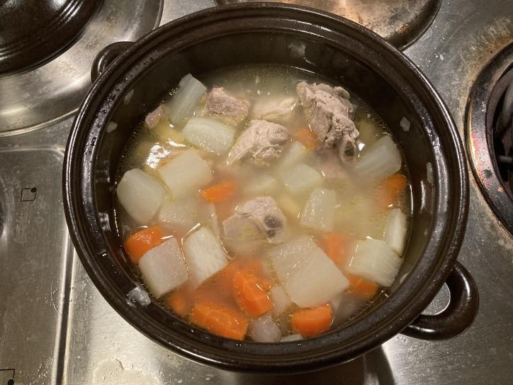
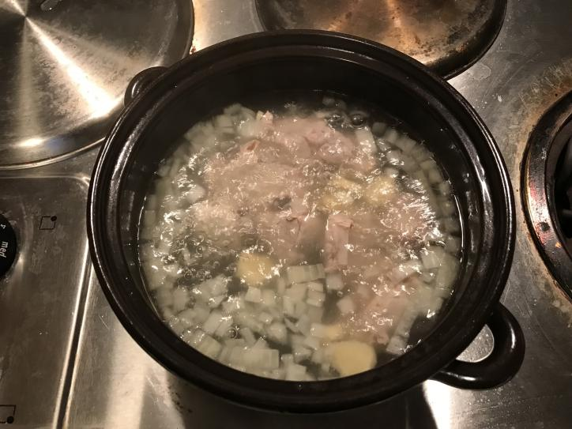
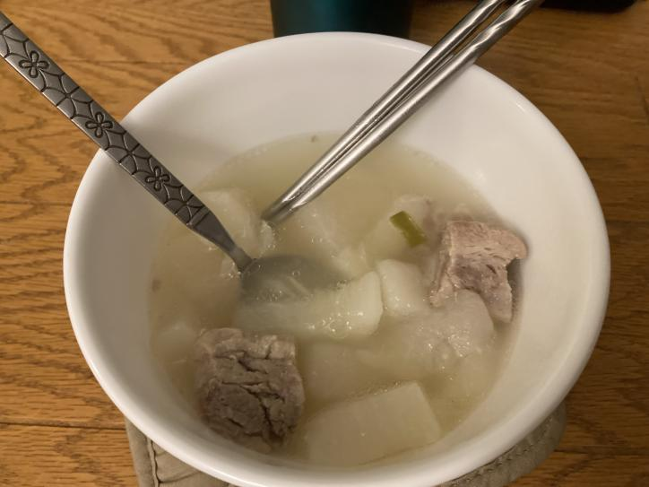
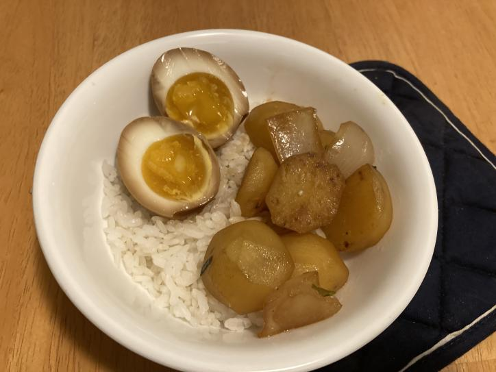
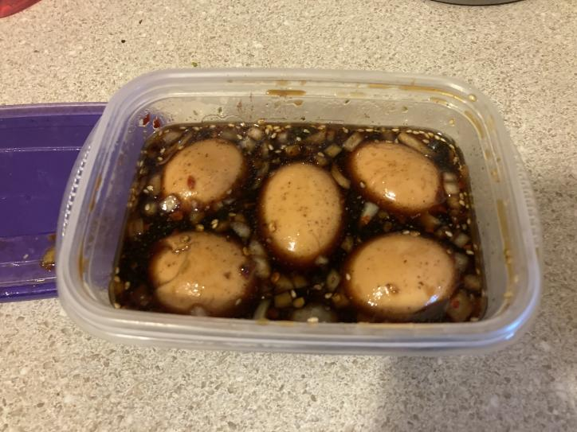
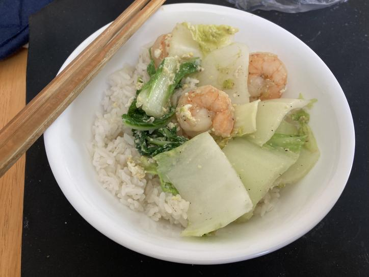
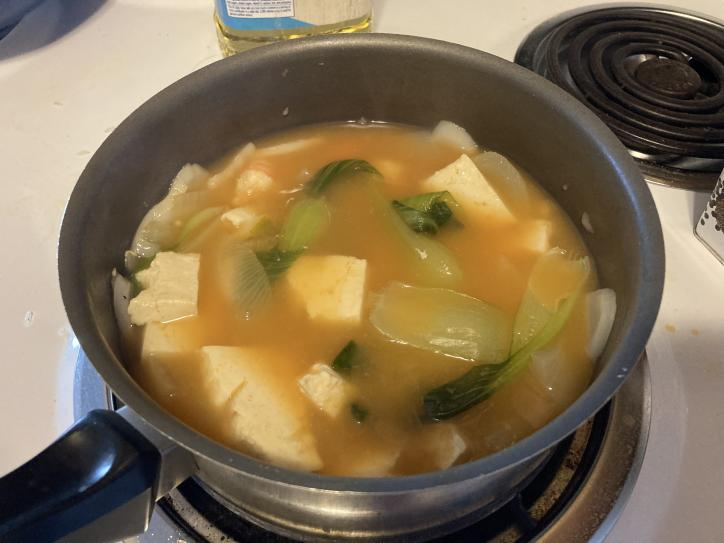
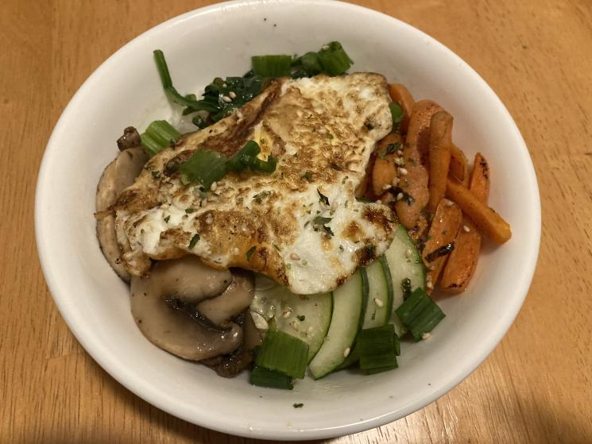
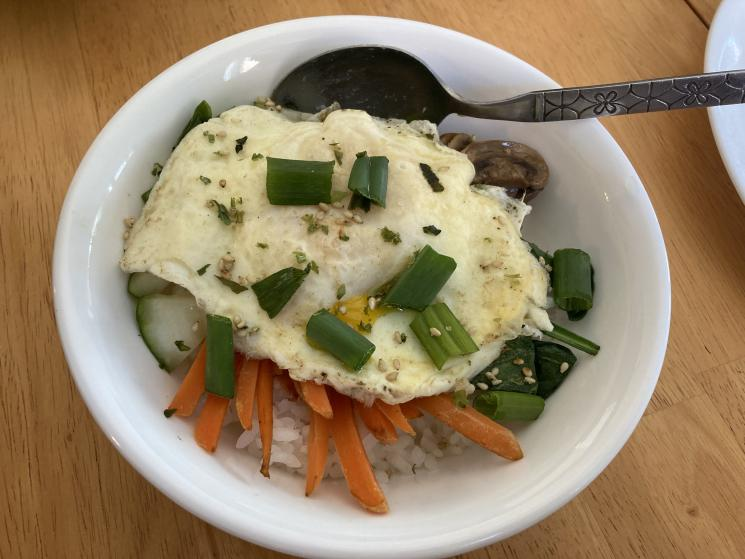

i love to eat and cook! i've been trying to cook more in college, so here are some recipes i'm perfecting and cooking!
My cooking
Pork Rib Soup



- 1 chinese radish or winter melon half
- 2 lb of pork spare ribs
- 1 carrot (optional)
- ginger root
- 1 yellow onion
- green onion
- white pepper and salt to taste
- 1. start by blanching the pork ribs with 2-4 slices of ginger and 1 ring of yellow onion for 10 minutes.
- 2. meanwhile, cut carrot and radish into large chunks of similar size. dice the remaining yellow onion and slice the ginger.
- 3. transfer the meat only into another boiling pot of water. dispose of the water the meat cooked in previously. this is to cleanse the meat of the blood.
- 4. add diced yellow onion and ginger. lower heat to a low boil and allow meat to cook for 30 minutes.
- 5. after 30 minutes, add vegetables and lower heat to a simmer. allow to simmer for 1.5-2 hours.
- 6. season with white pepper and salt to taste. garnish with green onions and enjoy!
Soft Boiled Soy Eggs


- eggs
- soy sauce
- water
- sugar
- onion
- chinese five spice
- 1 clove garlic
- sesame oil
- sesame seeds
- 1. fill a pan just until the water goes up about an inch. boil your eggs in this with the cover on for 6-8 minutes. you can add vinegar if you would like, since it helps with peeling.
- 2. take the eggs out and leave them in cold water.
- 3. to make the marinade, use a 1:1 ratio of soysauce and water. add chopped onions and minced garlic. add 2 tablespoons of sugar, a splash of sesame oil, and chinese five spice to taste. sprinkle with sesame seeds.
- 4. peel your eggs carefully and submerge them in the marinade. soak overnight, then enjoy!
Shrimp and Napa

- shrimp
- napa cabbage
- 1 egg
- ginger root
- 1 clove garlic
- green onion
- chicken broth
- white rice (optional)
- 1. start by putting the white rice into your rice cooker and turning it on.
- 2. meanwhile, defrost your shrimp and chop up your napa cabbage. mince your garlic and ginger.
- 3. add ginger and garlic and oil to a wok. cook until fragrant, then add the shrimp and napa. once the shrimp starts turning pink, add chicken broth and stir fry an egg into the mixture.
- 4. season with salt and pepper to taste. top with green onions and serve on rice. enjoy!
Gochujang Tofu Soup

- tofu
- bok choy
- 1 egg (optional)
- gochujang
- rice cakes or dduk
- yellow onion
- green onion
- shrimp (optional)
- 1. start by boiling water.
- 2. meanwhile, defrost your shrimp and chop up your bok choy and onions.
- 3. stir a spoonful of gochujang into your water. add shrimp, tofu, onions, and bok choy with salt and red chili pepper to taste.
- 4. add in your rice cakes or dduk once the shrimp starts turning pink.
- 5. once finished, turn off the heat and crack in an egg. enjoy on its own or with white rice!
Bibimbop


- 1 egg
- protein (marinated beef, pork, chicken, or tofu) (optional)
- 1 egg (optional)
- gochujang
- carrots
- mushrooms
- green onion
- spinach
- white rice
- sesame oil
- sesame seeds
- cucumber
- beansprouts
- 1. start by cooking your white rice in a rice cooker.
- 2. meanwhile, take your pre-marinated protein out and cook it with sesame oil.
- 3. cut your mushrooms into slices. cut your carrots into thin sticks. cut your cucumbers into half moons.
- 4. in a second pan, cook each vegetable on its own in sesame oil, except for the cucumbers. then fry an egg.
- 5. get a bowl of white rice and top it with your protein and vegetables. put a scoop of gochujang on top and then add your egg. sprinkle with sesame seeds and green onions. then break your egg and mix together to enjoy!
Previous
Next